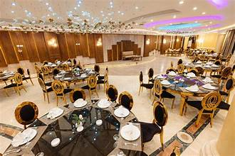

رمز الفخامة المطلة على كوبري ستانلي
تأسس فندق ومطعم سان جيوفاني عام 1938 في موقع فريد بمنطقة ستانلي، ويُعد من أرقى الوجهات الكلاسيكية التي حافظت على مستواها وجودتها لأكثر من 80 عاماً.
يشتهر المطعم بإطلالته البانورامية على البحر وكوبري ستانلي الشهير، ويقدم قائمة طعام عالمية ومأكولات بحرية فاخرة. ارتبط المكان دائماً بالرومانية والهدوء وعزف البيانو الحي.
عودة للصفحة الرئيسية